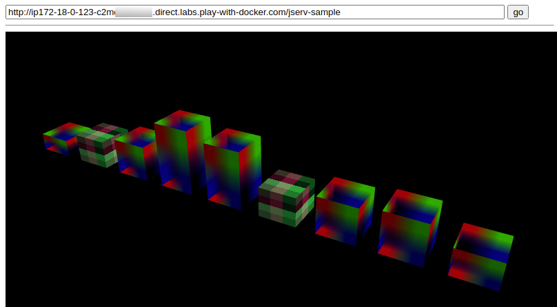

Play with Docker¶
Building & Publishing¶
For running Docker Nginx.
docker build -t react-quiz .
docker rm quiz
docker run --name quiz -dp 80:80 -t react-quiz
For building Jserv-sample image, in semantic-jserv/jserv-sample/:
docker pull tomcat:9.0
docker build -t jserv-sample .
docker run --name jserv-sample -d -p 8080:8080 --rm jserv-sample
docker system prune -a
docker tag e62 odysz/jserv-sample:1.1
docker push odysz/jserv-sample:1.1
Docker Labs Quick Start¶
docker pull odysz/jserv-sample:1.1
docker run --name jserv-sample -d -p 8080:8080 --rm jserv-sample
Copy and go the url, visiting
http://ip172-18-0-123-c2mc....direct.labs.play-with-docker.com/jserv-sample/menu.serv11
Ending with /jserv-sample/menu.serv11.
